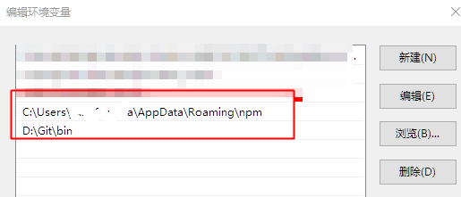
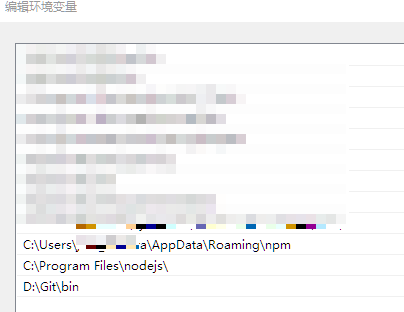
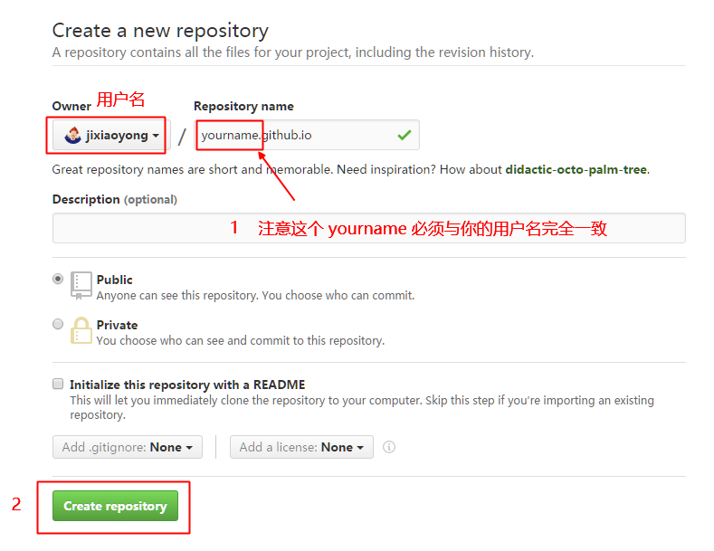
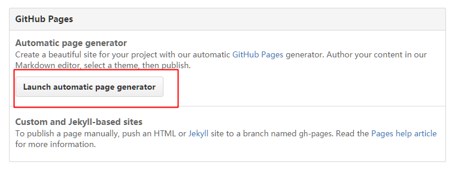
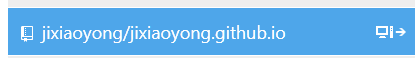
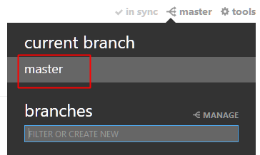

Hello World！
一直以来，为了有一个合适的在线写字的地方，我尝试过许多种工具，从最初的 QQ 空间开始，到各种门户网站的博客，再到自己开始尝试搭建博客，一路奔忙，门户网站的限制太多，自己搭建的博客又时常由于空间提供商的各种问题而无法访问。许多时候一个平台只能使用一段时间，这样子颠颠撞撞大概也有五六年的时间了。
一直听说 github 这个平台的各种优点，尤其是可以作为稳定而免费的空间托管博客最令我心动，但是之前多次尝试不得其道，终以失败告终。最近在学习 Android 语言的时候，又再次用起了 github ，不过这次是用它来存储代码。不得不承认，使用 github 来控制程序版本真是一件令人愉悦的事件。
机缘巧合，因为需要将学习过程中的一些笔记，心得总结找个地方整理，显然单纯的使用 github 并不是一个好办法，而其他的平台的博客限制又太多，于是又尝试用 github 搭建一个博客，虽然对这些知识并不是很熟悉，但误打误撞竟然也成功的搭建好了博客。下面就把整个建站的过程大概梳理一下，以便以后查看。
准备软件
下载软件：
- node 客户端
- git
- github windows 客户端
安装 git 和 github windows 客户端
- 安装 git:
git 安装时按照默认的配置，一路点击确定就可以。
- 安装 github
github 安装分为两种：
一种是直接用官网的安装包，在安装的时候需要从网上下载资料，受网速限制，这种方法很慢，而且容易出错；
另一种直接找一份github离线安装包解压到本地即可使用，我就是使用后一种方法。
安装node
- 安装 node 客户端
下载并安装 node ,我使用的版本是 node-v5.7.1-x64。
在安装完 git, node 之后，win 键 + R 输入 cmd 打开 windows 自带命令行，输入 git / npm 之后，如果显示出帮助信息而非 不是内部或外部命令，也不是可运行的程序或批处理文件这样的提示，就说明 git 和 node 已经配置好了环境变量，否则就需要手动配置。
配置环境变量方法：
此电脑 –> 右键 –> 属性 –> 高级系统设置 –> 环境变量
找到用户环境变量 –> path ，如下图修改

找到系统环境变量 –> path ，如下图修改

这样子 node 应该就可以正常使用了。
安装hexo
- 打开命令行，全局安装 Hexo ,加 -g 参数：
npm install -g hexo
- 查看 hexo 版本
hexo version
结果：
Blockquote
hexo-cli: 1.0.1
os: Windows_NT 10.0.14316 win32 x64
http_parser: 2.6.2
node: 5.7.1
v8: 4.6.85.31
uv: 1.8.0
zlib: 1.2.8
ares: 1.10.1-DEV
icu: 56.1
modules: 47
openssl: 1.0.2g
到这里 hexo 就在电脑上面安装好了。
配置hexo
进入存放 hexo 文件的目录下，创建一个文件夹 blog 存储 hexo 的文件
hexo init blog
然后进入这个文件夹
cd blog
启动 hexo 服务器
hexo server
[info] Hexo is running at http://localhost:4000/. Press Ctrl+C to stop
打开本地地址：http://localhost:4000/ ，就可以看到本地搭建好的 hexo 博客了
这样子一个 hexo 博客就在本地搭建好了
这里是目录的解释：
scaffolds 脚手架，也就是一个工具模板 scripts 写文件的js，扩展hexo的功能 source 存放博客正文内容
source/_drafts 草稿箱 source/_posts 文件箱 themes 存放皮肤的目录 themes/landscape
默认的皮肤
_config.yml 全局的配置文件 db.json 静态常量
一些 hexo 语句解释
help 查看帮助信息 init 创建一个hexo项目 migrate 从其他系统向hexo迁移 version 查看hexo的版本
–config参数，指定配置文件，代替默认的_config.yml –debug参数，调试模式，输出所有日志信息
–safe参数，安全模式，禁用所有的插件和脚本 –silent参数，无日志输出模式
新建文章，命名为“新的文章”，输入命令：
hexo new 新的文章
hexo 默认生成 md 文件，新生成的文章在目录： .\blog\source\_posts\新的文章.md ，对其进行相应的编辑即可
文章格式：
title: 新的文章
date: 2014-05-07 18:44:12
updated : 2014-05-10 18:44:12
permalink: abc
tags:
- 开始
- 我
- 日记
categories:
- 日志
- 第一天
---
配置github
- 注册并登录 github
进入 https://github.com/ ，注册新账户，并且登录
- 新建 respositoy
在主页点击 New respositoy 新建一个名字为 yourname.github.io 的 respositoy；

- 设置新建一个 github pages
进入仓库主页，选择 settings --> github pages --> Launch automatic page generator ,按照默认的主题配置选择一个就好

上传网站
- 对于 hexo 的相关配置：
打开 _config.yml 修改一下部分：
/# Site
title: 季小勇的博客
subtitle:
description:
author: 季小勇
language: zh-CN
timezone:
/# URL
/# If your site is put in a subdirectory, set url as 'http://yoursite.com/child' and root as '/child/'
url: http://yoursite.github.io/
root: http://yoursite.github.io/blog/
此处由于我是将网站放在二级目录 ./blog/ 下面，所以 root 目录设置如此，使用的是绝对路径，否则在网页上显示的时候，css 等由于路径不对，加载可能会有问题。
deploy:
type: git
repo: https://github.com/yourname/yourname.github.io.git
这行语句是使用 hexo 自动 deploy 到 github 时的设置，如果正常的话，当用 hexo 对网站静态化处理后，再执行 hexo deploy 就可以自动部署到 github 上面了，但是我的电脑 git 或者 node 由于是不同时间装的期间还重装了几次系统，可能导致某些设置有误，所以在执行 hexo deploy 的时候一直提示有问题，故而采用另一种办法手动同步网站，这句话也可以不修改。
- 用 hexo 对文章进行静态化处理：
输入命令
hexo generate
在 blog\public 目录下生成的 public 包含所有的静态化文件,此时，这个文件夹内所有的内容就是处理好的网站，将其发布到合适的空间就可以正常显示。
由于之前的 git 或者 node 配置有误，所以这时候采用手动同步网站:
将上次在 github 上建立的项目
yourname.github.io同步到本地。
同步的方法很多，这里我选择的是使用 github 的 windows 客户端，比较方便：
打开 github 客户端，找到项目，选择 clone 到本地即可。

之后打来同步的项目，确认当前的 branch 是 master ，否则同步之后网站不会显示。

在 github 同步的目录下找到上次建好的项目 yourname.github.io ,进入之后，将上文获得到的 public 内容放入目标文件夹，我选择的是将博客放在子目录，所以这里新建了一个 blog 文件夹用于放置博客，所以就是将 public 全部内容 放入 ./yourname.github.io/blog/ 目录下，这样子在网站上显示的时候，博客的网址就是 http://yourname.github.io/blog/
这样一个简单的利用 github 托管的 hexo 博客就搭建好了。
注：本文内容是根据我建立博客时的做法整理而成，其中有部分内容是参考网上的教程，文中引用的文字全部来自 http://blog.fens.me/hexo-bootstarp-github/ ，此文对我帮助很大，感谢作者 张丹(Conan) 的分享。